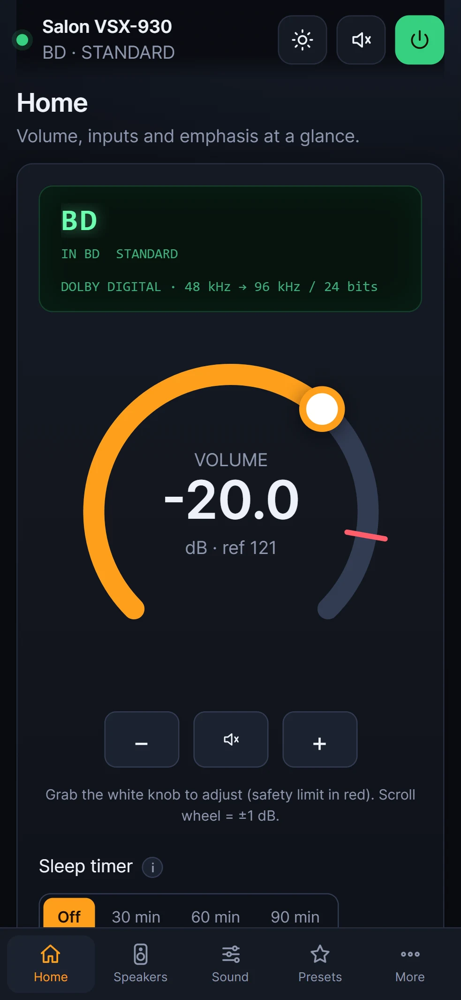

Tested on real hardware
VSX-921, VSX-1021
Every screen of the app has been used on these receivers.
Volume, inputs, listening modes, speaker levels and the setup menus, from your Android phone over your home Wi-Fi. Free and open source, no account, no cloud.
Android 7 or later. Install it straight from the file, no Play Store needed.

Drag the dial or hold the buttons. A safety limit you set yourself stops anyone from blasting the room, and your phone's volume keys can drive the amp too.
See which speakers play in the current mode, trim each channel in half-decibel steps, solo one to check it, and drag the listening spot to rebalance the room.
One tap lifts voices or bass for a late-night film, using Dialog Enhancement, the centre channel and the subwoofer. Another tap puts everything back as it was.
Modes are grouped and the ones that don't fit the current signal are greyed out, so you stop cycling through a hundred names to find Pure Direct.
Calibration, HDMI, crossover and input settings that normally hide behind the on-screen menu. Changes that affect your installation always ask before they apply.
Type a frequency, browse the A to G memory banks by name, and save whole scenes (input, mode, levels) as presets you recall in one tap.
A navigation pad for the receiver's own menus and the network sources, for the odd setting the app doesn't cover yet.
Pioneer's own iControlAV2 and iControlAV5 were written for Android 2.2 and 2.3 and haven't been updated since. Since Android 14, phones refuse to install apps built for anything that old, so on a current phone they simply won't install.
| App | Built for | On a current phone |
|---|---|---|
| iControlAV2 | Android 2.2 (2010) | Blocked by Android 14 and later |
| iControlAV5 | Android 2.3 (2010) | Blocked by Android 14 and later |
| Pioneer Remote | Android 16 | Runs on Android 7 through the latest release |
Figures read from the apps' own packages (target API 8 for iControlAV2, 10 for iControlAV5, 36 for Pioneer Remote).
The app talks the network protocol Pioneer used from 2011 onwards and detects each model's features as it connects. Here is how far each family has been checked.
VSX-921, VSX-1021
Every screen of the app has been used on these receivers.
VSX-521, VSX-923, VSX-1123, VSX-1028, VSX-1128, VSX-930, SC-1223, SC-2023, SC-1323, SC-1523, SC-1328, SC-1528, SC-71, SC-72, SC-75, SC-77, SC-LX57, SC-LX77, SC-LX79, SC-LX87
Commands and quirks come from the published protocol and are covered by the demo mode, but haven't been confirmed on each model yet.
VSX-LX303 and other 2018+ Pioneer receivers on the eISCP protocol
Power, volume, inputs and listening modes work through a translation layer. The deeper settings are still limited.
Model not listed, or something not right? Open the app, tap the warning icon, tick Full diagnostic and send the report. It reads every setting of your receiver (IP and MAC addresses are masked) and is usually all that's needed to add a model.
On your phone, tap Download the APK.
Open the file. If Android asks, allow installs from this source, then go back.
Tap Install, open the app and let it find your receiver on the Wi-Fi. Updates install over the top and keep your settings.
The APK is built automatically from the public source code on GitHub and signed with the same key for every release. Play Protect may warn about an unknown developer; that's the usual message for any app installed from a file.
It's a free side project. The Play Store asks new developers for a two-week closed test with a dozen testers before publishing; installing the file directly skips that.
Not as an app. The web version runs on a computer on the same network and works in any browser, including Safari on an iPhone.
Not officially. Recent Pioneer receivers share Onkyo's eISCP protocol, so some may respond, but only Pioneer models are tested.
Pioneer Remote is built in spare time and costs nothing. If it saved you from hunting for the original remote, you can support new models and features.